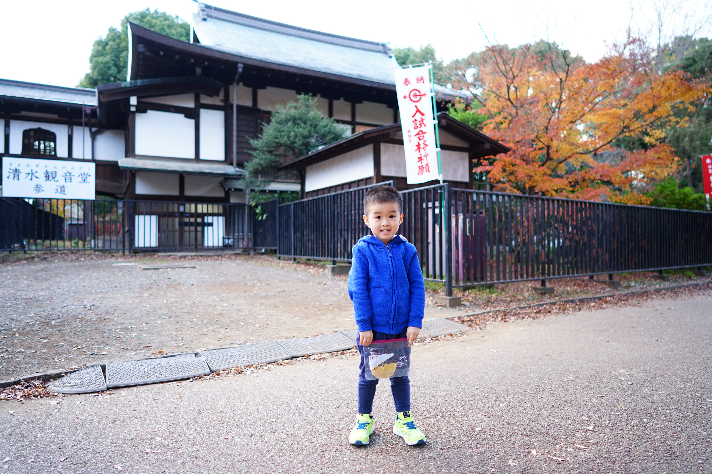
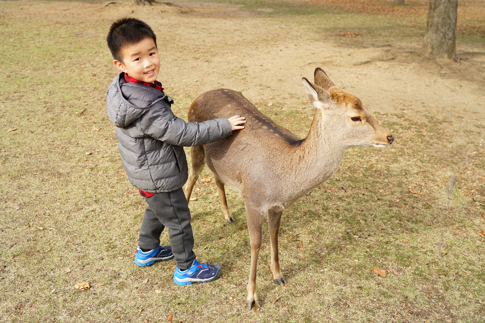
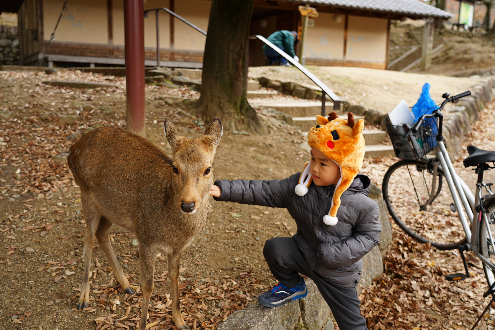
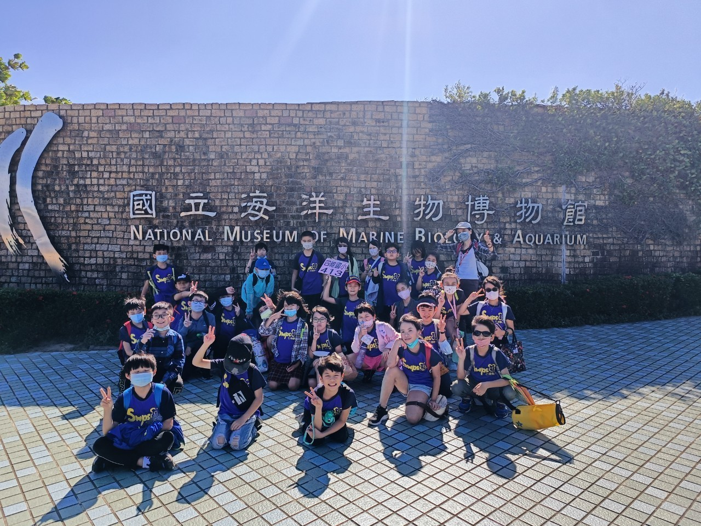
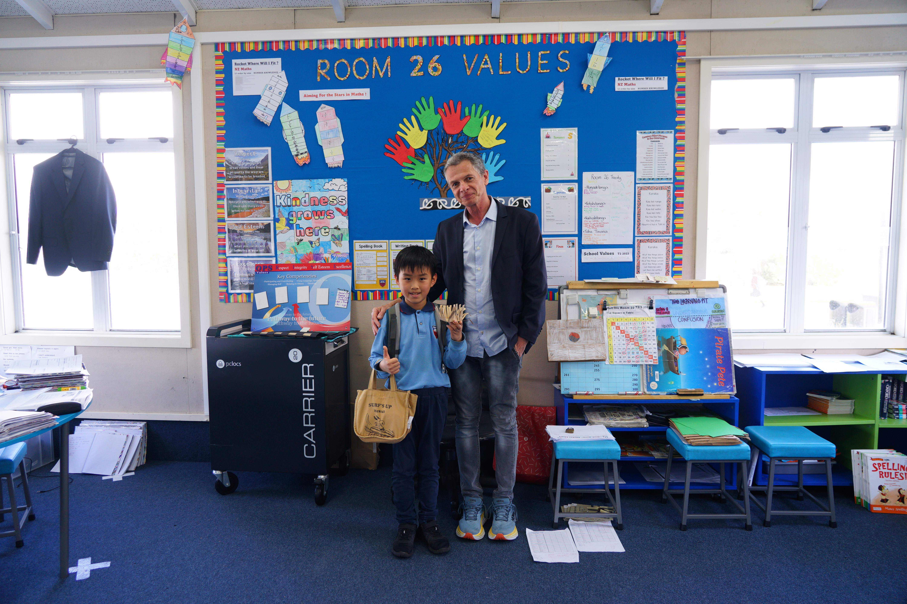
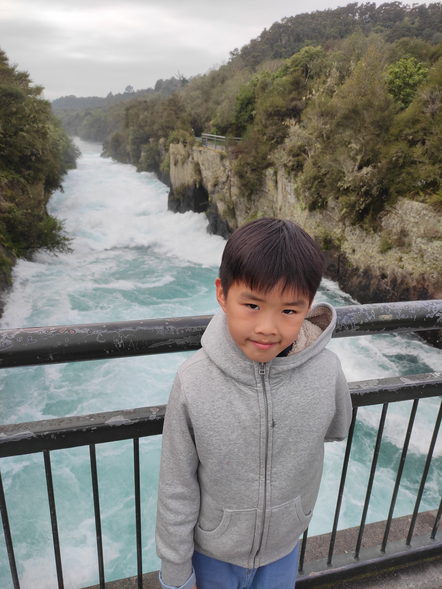
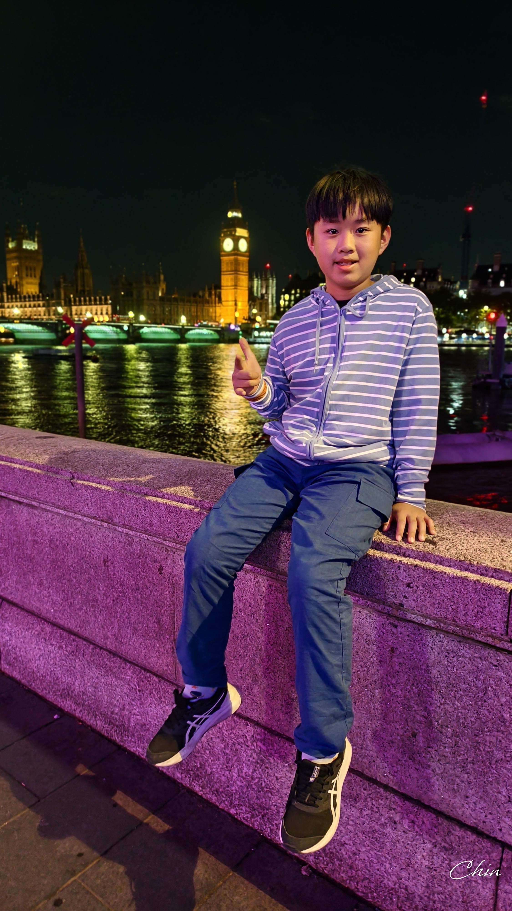
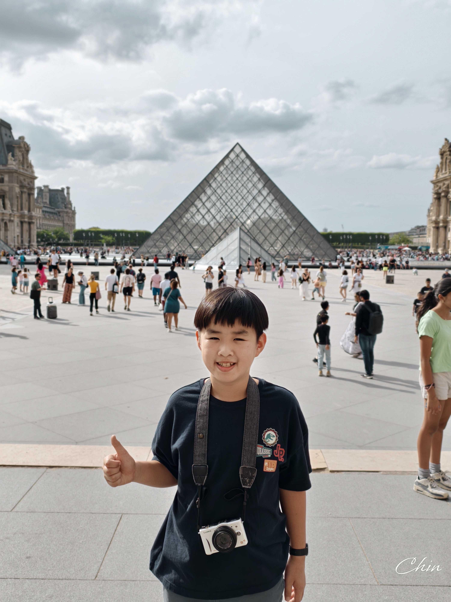

我的成長旅程相簿
日本：傳統與現代的交織

My journey through Japan perfectly balanced futuristic energy with ancient tradition. In Tokyo, I was swept up in a whirlwind of skyscrapers and the high-tech bustle of Shibuya.
在上野公園的清水觀音堂，這裡的楓葉很有日本的味道。

By contrast, Nara was a much quieter place compared to Tokyo. The highlight was Nara Park, where I met the famous sacred deer.
跟奈良公園的小鹿近距離接觸。

Interacting with these "polite" animals, who bow for crackers, provided a charming connection to nature that felt worlds away from Tokyo’s neon glow.
戴著皮卡丘帽子跟小鹿打招呼，鹿真的會點頭耶！
屏東海生館之旅

The National Museum of Marine Biology & Aquarium is a world-class destination that brings the wonders of the deep sea to life. Its most iconic feature is the massive underwater tunnel, where you can walk beneath gliding sharks and rays in one of the longest displays in Asia. From the majestic beluga whales to the towering giant kelp forests, the museum offers an immersive look at aquatic life, blending education with the pure awe of the ocean’s beauty.
校外教學的大合照，海生館的入口好壯觀！
紐西蘭：純淨的大自然

Studying in New Zealand was an incredible chapter, made even better by my teacher, Mr. Yates. He was remarkably kind, regularly taking the time to read my daily diary entries and offer support.
和超親切的 Mr. Yates 老師合照，這是我在 Room 26 的回憶。

The absolute highlight of my trip, however, was visiting the powerful Huka Falls. Seeing the sheer volume of bright blue water thundering through the narrow ravine was breathtaking. It was a stunning display of New Zealand’s raw, natural beauty.
胡卡瀑布的水藍得不可思議，大自然的威力好震撼！
英國：歷史的脈動

London is a perfect mix of royal history and modern energy. My favorite memories are the sights of Big Ben and the Tower of London, which make you feel the city’s deep past. Whether I was walking along the River Thames or catching a show in the West End, London felt like a place where every street corner has a story to tell.
夜晚的大笨鐘金光閃閃，泰晤士河畔的風涼涼的。
法國：生活藝術
.jpg)
Paris felt like a living museum, where every street is a blend of romance and iconic design. Whether it was seeing the Eiffel Tower sparkle at night or wandering through the art-filled halls of the Louvre, the city has a timeless elegance.
坐在艾菲爾鐵塔前的草地上，這就是巴黎的午後。

From the smell of fresh croissants in a Montmartre café to a sunset walk along the Seine, it’s a place that perfectly captures the "art of living."
羅浮宮的金字塔，我也有帶我的小相機來紀錄。